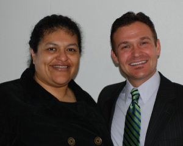

|
 |
|
|
The Slice | January / February 2012
New Leadership, New Learning
“As I’m in this job
longer, I start to think culture is more and more important,” says PAUSD
Superintendent Kevin Skelly, which is why he’s confident that both high
schools’ new leaders are well-suited to their jobs. Although Phil Winston
and Katya Villalobos are relatively new to their Principal positions at Paly and
Gunn, both have a long history in PAUSD schools. With more severe budgetary restrictions from the state, both Winston and Villalobos face the increasing challenge of engaging students as they develop the 21st century skills needed to thrive in a diverse global economy. “As the world changes, we have to figure out how to keep up with students who are used to their technological devices 24/7,” says Winston. “A lot of our teachers are beginning to use technology in ways they weren’t a year or two ago.” Villalobos agrees, “This generation of students are digital natives. Our job is to guide them not only to become consumers of information, but also producers.” Villalobos notes that students are creating their own learning communities on Facebook and through active blogs, videos, websites, and even a soon-to-be-released Gunn app. Last year, students got together and created the first “Tedx” [www.tedxgunnhighschool.com] event at Gunn, an event celebrated by Librarian Meg Omainsky as the ideal platform for students to “foster knowledge, creativity, integrity, and personal excellence.” The challenge, as Villalobos sees it, is that “we, as educators, have to figure out how to use this new reality to become more effective in our teaching.” In terms of curriculum, Villalobos points out that the new PiE-funded Engineering program at Gunn is a perfect example of this new blended learning environment. “If there’s ever a marriage between technology and critical thinking, this is it,” she says. “And we couldn’t have done it without PiE. We can now tap into these innovative programs when we wouldn’t have had the money to do it before.” Winston agrees that it’s becoming more and more challenging to engage students in traditional ways, and that PiE funds enable the high schools to try new learning approaches. “The idea of engagement has changed. And good, bad, or indifferent, that’s the world we’re in. We are constantly trying to figure out new ways to present and refine curriculum.” For example, Winston says that PiE money supports a continued relationship with Foothill College, “So students in our Java class can get dual credit, and receive an additional level of challenge from their professors.” Winston encourages his staff to continually reflect on best practices in teaching, while encouraging collaboration and the creation of interdisciplinary teams. “Teachers have built-in collaboration time once a week and it’s absolutely marvelous,” says Winston, “You see teachers getting out of their comfort zone, working with each other, challenging each other, really pushing each other’s professional limits, and, of course, it’s all about the students.” Villalobos agrees, “At the heart of what we do and who we are is the classroom. My vision of education hasn’t changed since I took my first class in Educational Theory. School is a place where teachers can teach and kids can learn. In Palo Alto, we have that entrepreneurial spirit, that creativity which makes this place special. Parents understand that their time and resources, including their ongoing support of PiE, continues to support the incredible opportunities for learning in our community.” “PiE money allows us to provide a level of service that is exemplary for a public high school,” says Paly Principal Winston. “With PiE dollars, we increased the hours in the college and career center, and we even added after-school college essay-writing workshops, which were a huge success this fall.” “You can’t beat the relationship between career advisor or counselor and student,” Villalobos adds. “The research tells us that all students benefit from that one-on-one time, so they can ask their important questions.” Villalobos credits PiE for maintaining a strong counseling team, “PiE dollars have given us a huge advantage in being able to support our six counselors. And when students feel connected to school and to individual, caring adults, they do much better in terms of college-readiness.” Winston agrees, “With PiE money, we were able to lower the Teacher Advisor (TA)-to-student ratio, which has a huge impact on the ability to create that ongoing relationship between students and caring adults on campus. And as the state and district budget becomes more restrictive, we’re going to rely more and more on PiE and the community to help support us.”
|

|
|
|
pausd.org | site map |
© 2012, Partners in Education | EIN (Tax ID#): 77-0186364 | tel: 650.329.3990 | fax: 650.329.3723 |